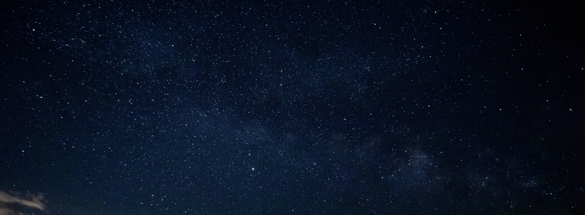

About me
I completed my bachelor's at Northwestern University in June 2022, graduating with a major in Physics with a concentration in Astrophysics and minoring in Data Science. I've been doing research in astrophysics since my sophomore year of high school – from LIGO parameter estimation working on GW150914 and GW170817, to my undergraduate work on binary stellar evolution and my post graduate work on white dwarf stars. In the summer of 2021, I participated in the International REU Program in Gravitational Physics where I worked at the Sapienza University of Rome on continuous gravitational wave signals.
I am passionate about inclusivity in science, and as an undergraduate student I was actively involved in departmental mentoring and DEI efforts. I was the sole undergraduate member of the CIERA Mentorship Action Team, where I worked on introducing extended mentorship structures, conflict resolution points of contact, and mentoring training opportunities. I am passionate about working to make enviornments inclusive for people with marginalized identities, in particular for queer and trans people.
After I graduated, I spent a year in the Astronomy department Boston University working as a research fellow and a teaching fellow. I performed rese arch on white dwarfs with Prof. JJ Hermes, working on projects from the seismology of white dwarfs to observational data analysis. My teaching responsibilities including teaching the laboratory and discussion sections of introductory astronomy courses, hosting office hours, grading assignments, and utilizing the campus observatory for education and outreach purposes.
Outside of my background in astronomy research and academia, I am interested in painting, music, machine learning, and genealogy research. I completed a project tracing my family back to 15+ comuni in Italy, which is visualized here. I don't get to experience dark skies often, but I was able to the image above of the milky way in the dark skies of southern Rhode Island in June 2020.
93I am now looking to shift from a career in academic research in astrophysics to different roles ranging from science communicatio to data science.